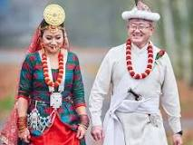

Traditional wedding attire of Sikkim
Sikkim’s traditional wedding outfits are filled with royalty and elegance. The beautiful bride and groom wear a conventional wedding Bakhu of the finest quality silk. The only additions to male attire are loose trousers, classy leather shoes, and a silky turban called a Topi. In contrast, the females wear an exclusive colorful ‘Kho’ made of fine silk and brocade. This gorgeous full-length sleeve has alluring designs and intricate patterns. Kho is paired with a charming ‘Pangden’ apron. ‘Pangkham’ is a headgear that covers the head of the Sikkimese bride. These are larger, intrinsic multicolored scarfs